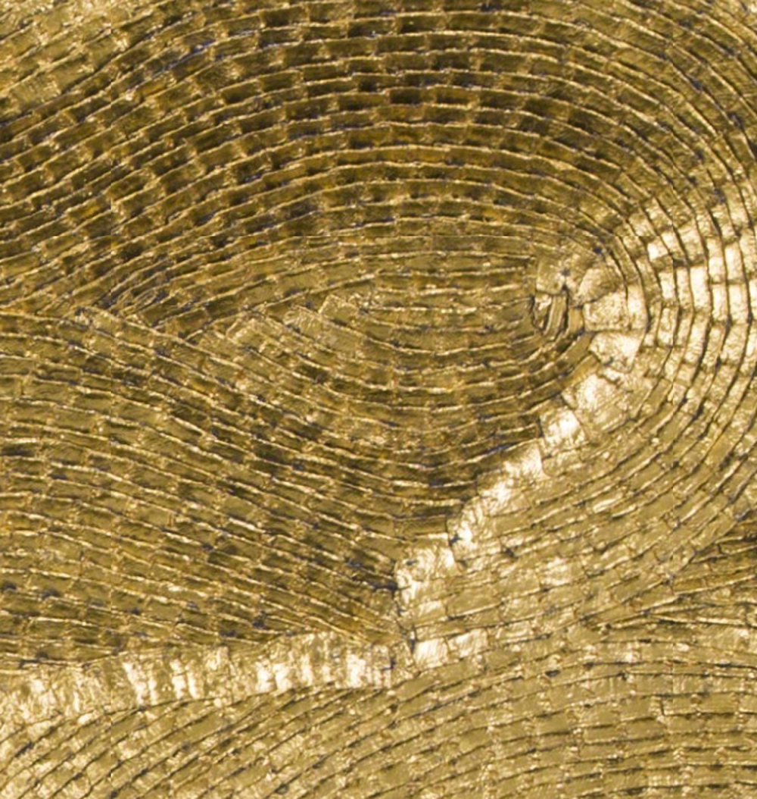
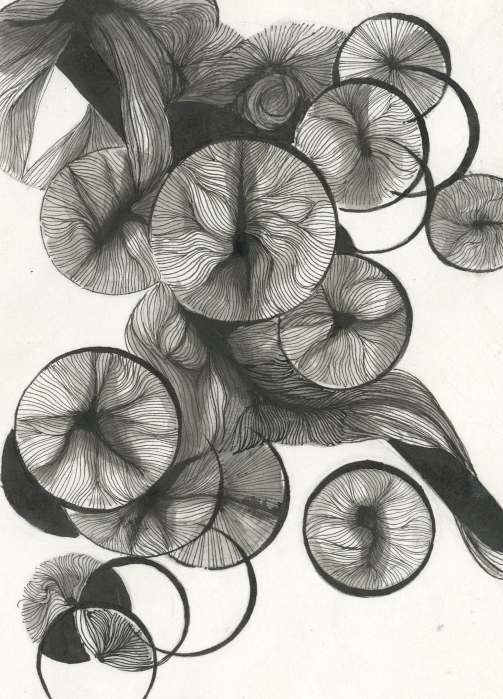
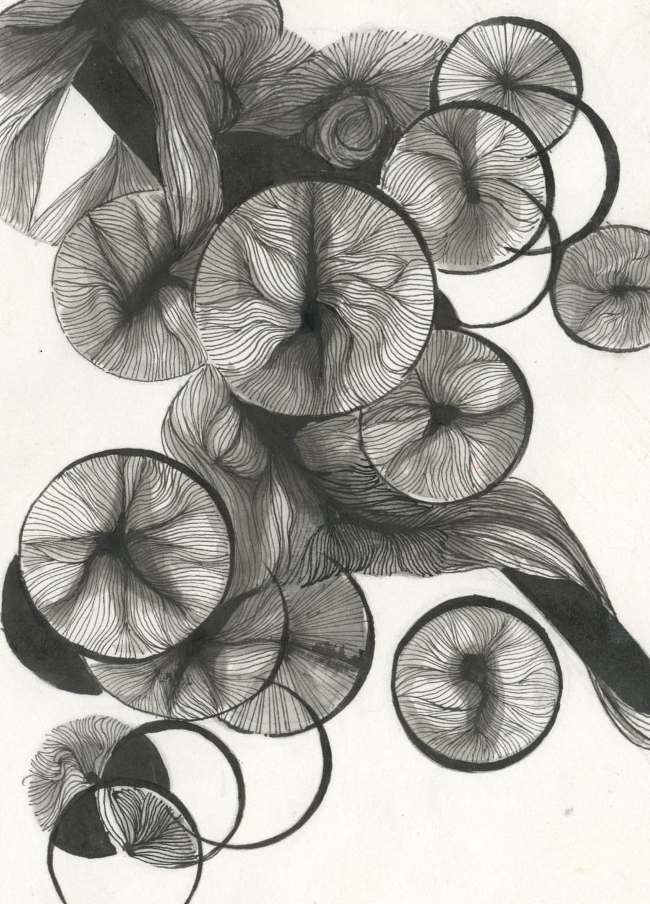
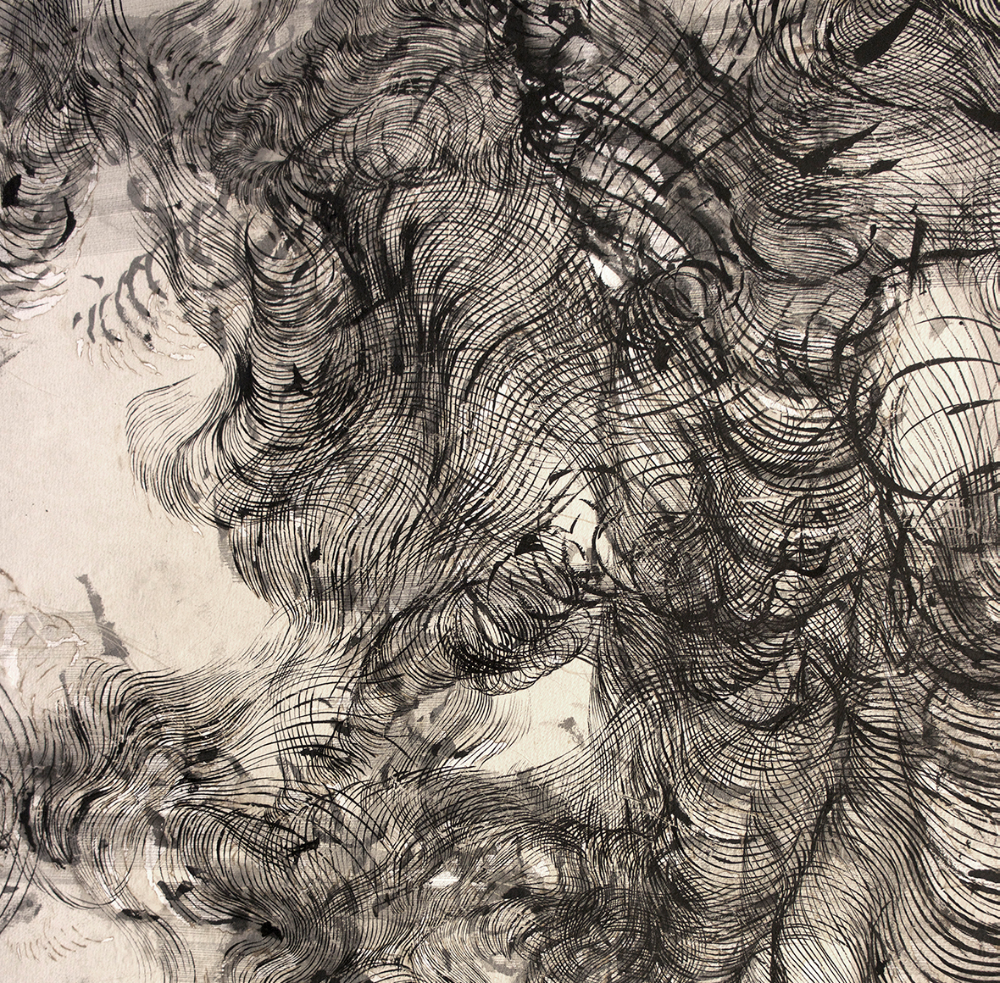
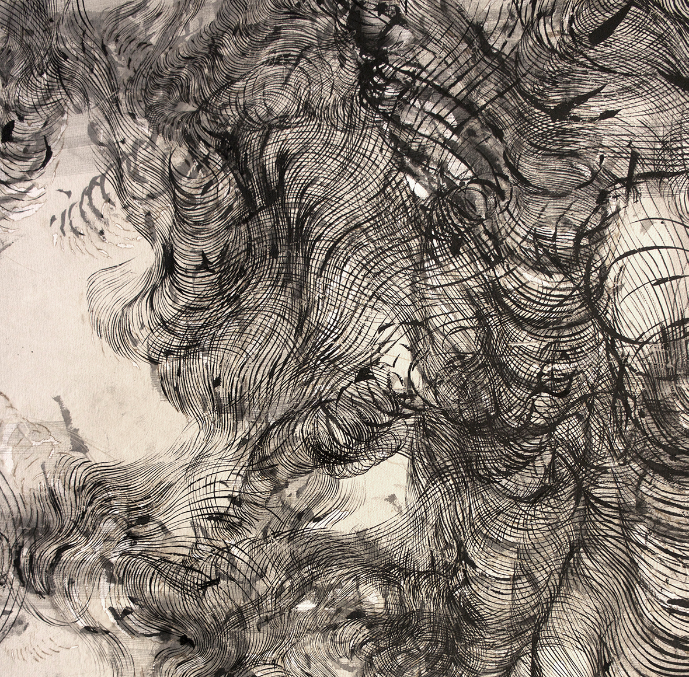

Prophetic Empty World
Mat Hennek has been shooting street scenes devoid of people for years. Then reality caught up.


“Material Identity,” a group show organized by London gallery Rook & Raven to coincide with Frieze Week, explores the relationship between identity and materiality through the work of five female artists: Olga de Amaral, Emilie Pugh, Yun-Kyung Jeong, Camilla Emson and Adeline de Monseignat. The idiosyncrasies of each artist’s practice demonstrate their highly personal approaches to art-making as a process of self-discovery. The exhibition positions a textile-based work by acclaimed Colombian artist Olga de Amaral at the center of the conversation. Strata XV (2009) is highly structural, drawing on de Amaral’s backgrounds in both architectural design and fabric art. Made of linen the artist has coated with gesso, acrylic, and gold leaf and woven into geometric patterns, it’s at once substantial, confident, and lustrous; shimmering like chainmail, it has presence. Orbiting de Amaral’s piece is the work of four emerging artists, young women whose unique mark-making techniques are integral to their practices and, within the context of the show, seem to evince acommon belief among them that self-discovery is as much about the journey as the result—and, further, that the search is sometimes uncomfortable.
O. de Amaral, Entre ríos 4, 2012
Emilie Pugh, ‘Scotoma [skótos]’(detail),2014.(Ink on paper;100x140cm).
https://artonapostcard.com/products/lot-155-emilie-pugh-internal-apertures
Detail of ‘Anatomy of Thought III’,Ink, incense burnt gampi paper and gunpowder,293x150cm.
(Left and right) Mixed media on unprimed canvas, by Yun Kyung Jeong, 2018
To create much of the work in the exhibition, these young artists have deployed small, calculated acts of destruction.
They prick, puncture, burn, and bleach to trace their designs, and the results are surprisingly delicate and ethereal.
British artist Emilie Pugh shapes her drawings by lighting gunpowder or singeing layers of transparent Japanese paper
with incense, and using the ash and Indian ink to add fine undulating lines and smudges. The effect is of roiling
smoke, a black cloud in which vague forms can almost be distinguished.
Pugh’s process is both systematic and intuitive, as are the other young artists in “Material Identity,” and where de
Amaral’s work expresses the assured self-knowledge that results from years of effort and meditation—there are five
decades between de Amaral and the other artists in the show—the young artists are for now wholly engaged in the
search.
 

 



Other Articles